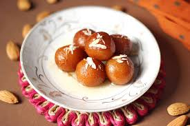

Popular Indian Cuisine
Exploring the flavors of India through its diverse and rich culinary traditions!
North Indian cuisine
North india is known for its rich, aromatic, and flavourful dishes often cooked with ghee and spices:
- Biryani: A fragrant rice dish made with aromatic spices and meat or vegetable
- Butter Chicken: A creamy, tomato-based curry that's a favorite Worldwide.
- Paneer Tikka: marinated paneer cubes grilled to perfection.

Aromatic and flavorful Biryani
South Indian Cuisine
South India offers a wide array of dishes with a perfect blend of spices and tangy flavours:
- Masala Dosa: A crispy rice crepe stuffed with spicy potato filling.
- Idli and Sambhar: Soft rice cakes served with a tangy letil-based vegetable stew.
- Chettinad chicken: A fiery, flavorful chicken dish from Tamil Nadu.

South indian favorite: Masala Dosa
Sweet Delight
No Indian meal is complete without indulging in some mouth-wateringh desserts:
- Gulab Jamun: Fried milk solids soaked in sugar syrup.
- Rasgulla: Soft and spoongy cheese balls in light sugar syrup.
- payasam: A South Indian dessert made of milk, rice, and jaggery

Irrestible Gulab Jamun
Back to Home
Contact us at info@incredibleindia.com
@ 2025 Incredibe India project